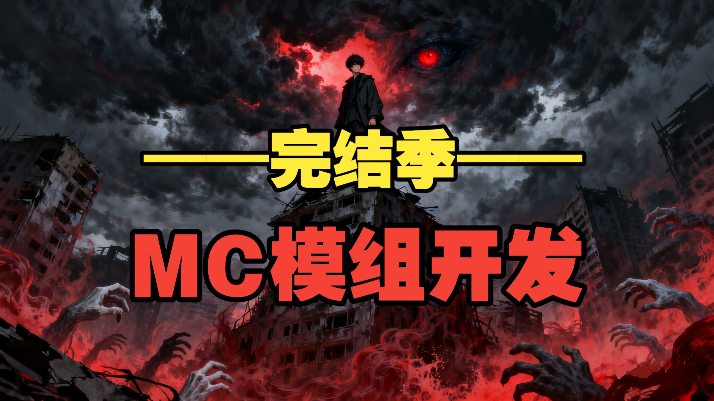
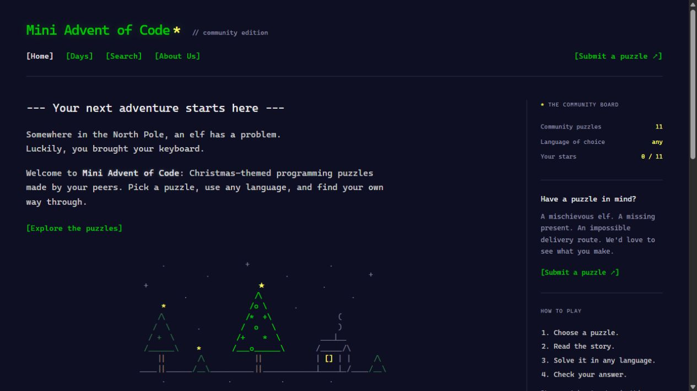
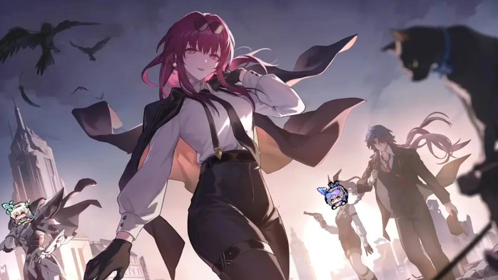

Leo Xu
Game Developer
& Programmer
I design and build interactive worlds, gameplay systems, and experiences that bring creative ideas to life.
Java / Godot / Game Design / Creative Development
This desktop has a few secrets.
Click around. Pet the little guy.
Old cheat codes still work.
01 / FEATURED PROJECTS
Ideas made playable
↗MODEL VIEWPORT / CREATURE DESIGN
01 / MINECRAFT MOD · RPG
Immortal
Cultivation 修仙
Chinese cultivation fantasy, built into Minecraft. Original combat, magical abilities, creatures, and progression systems turn a familiar world into a new adventure.
My contribution Programming, gameplay systems, interfaces, and visual assets

02 / STANDALONE GAME · STRATEGY
Last Signal
Six contestants. One survivor. A turn-based strategy game about scarce resources, technology auctions, and the fragile line between an ally and a rival.
My contribution Independent game design and development
02 / ADDITIONAL PROJECTS
Beyond the main quest
4 items

GAME ART / COLLABORATIVE DEVELOPMENT
Collaborated with a team of 15 professional developers, contributing custom 3D models and textures for a Minecraft modification.
My work: 3D modeling and texturing
Team reach: approximately 899K combined showcase video views
Team reach: approximately 899K combined showcase video views

WEB DEVELOPMENT / LEADERSHIP
Led a student development group in building an interactive programming challenge website, collaborating with teachers and students on features and challenge content.
My work: team leadership and major website implementation
Collaboration: multiple teachers and 30+ students
Collaboration: multiple teachers and 30+ students

INTERFACE DESIGN / GAME MODIFICATION
Independently developed and published a custom cursor modification, exploring interface customization through Windows INI configuration scripting.
Published reach: 12K+ views and approximately 1.3K downloads
ACCESSIBILITY CONCEPT / ILLUSTRATION
HACKATHON / ACCESSIBILITY
Eye-Tracking Keyboard
Collaborated on an eye-tracking keyboard application designed to help people with disabilities communicate and interact with technology.
My work: learned Swift and built key parts with a team during a
five-day hackathon Presented the project to judges
Hackathon project · public demo not available
03 / DEVELOPMENT PROCESS
How I make things
Start with an idea
I figure out what I want to make and what the player should be able to do.
What would make this fun to play?
Build a first version
I build a small version to try out the main idea before adding more.
It does not need to look finished yet. It just needs to work well enough to try.
Test and improve
I test it, fix bugs, and adjust anything that feels awkward to use.
I check the controls, the game rules, and whether things make sense while playing.
Share it
I get the project ready for people to try, then keep working on fixes and updates.
I check that the project is ready to run and that players know how to get started.
04 / ABOUT ME
About Me
I'm Leo, a game developer and programmer focused on mods, games, website, and really all kind of engineering things.
My work combines Java and Godot development with 3D modeling and interface design. I enjoy turning ideas into playable experiences, from Minecraft mods to real published games.
05 / TECHNICAL SKILLS
A toolkit for building worlds
01
Programming
Java · JavaScript · HTML · CSS · Bash
Swift experience through hackathon development
02
Game Development
Godot · NeoForge · Minecraft modding
Combat systems, progression, entities, and game interfaces
03
Visual & Interaction Design
3D modeling · Texturing · UI design · Drawing
Game assets, custom effects, and interactive experiences
04
Creative Collaboration
Team leadership · Feature planning · Presentations
Student teams, teachers, and collaborative mod development
06 / CONTACT
Let's build
something worth playing
Have a question about my work, a creative idea, or an opportunity to collaborate? I'd love to hear from you.